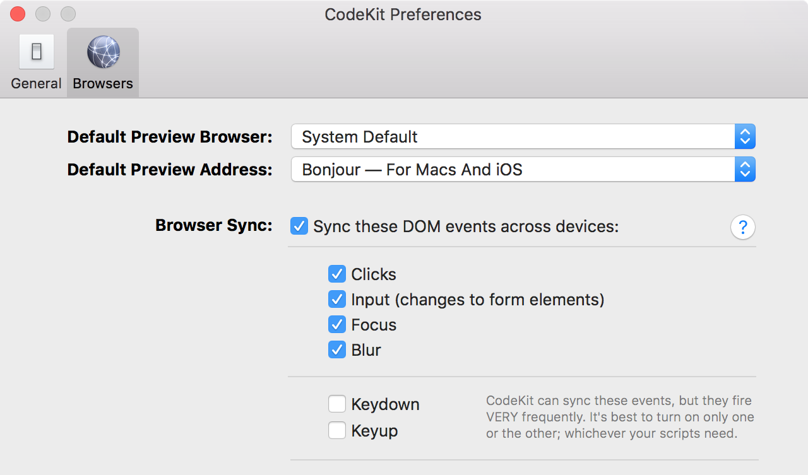

HotelsCombined Front end forum
Talk 1: Mobile debugging
Boris Pavlov
Boris shows us how to debug mobile sites - all without using USB or wires, wow!
Talk 2: Gotta test 'em all!
Mikkel Bergmann
I wanna be the very best, Like no one ever was, To catch them is my real test...!
Like this
How does it work?
Browser->ControlProxy: Request a page
ControlProxy-->Endpoint: Forward request
Endpoint-->ControlProxy: Response
note over ControlProxy: Inject "parasitic JS" \nbelow body tag
ControlProxy->Browser: respond with proxied page
Browser event sync example
note over Browser: User clicks\non element
Browser->ParasiticJS: Event object
ParasiticJS->ControlProxy: serialised\nevent object
ControlProxy-->OtherBrowsers: Event object
note over OtherBrowsers: Apply events\nfrom object
We will look at
Browsersync
"BrowserSync makes your tweaking and testing faster by synchronizing file changes and interactions across many devices."Note: It does a bunch of other things, but we will concentrate on the proxying capabilities.
Using browsersync
So do we just give up?
Of course not!
Building our very own Dragonite
We fork and conquer! Here's an example I prepared earlier.
What's different?
- Preliminary touch event support (slideshow)
- More input events (better typing support)
- Uses xpath to find elements instead of indexes (fix calendar issue)
- Sync content-editable data
CodeKit
"CodeKit automatically refreshes browsers as you work. Like magic."
Site of the month
Thanks for coming!
If you are interested in presenting a lightning talk, please let me know for next month.